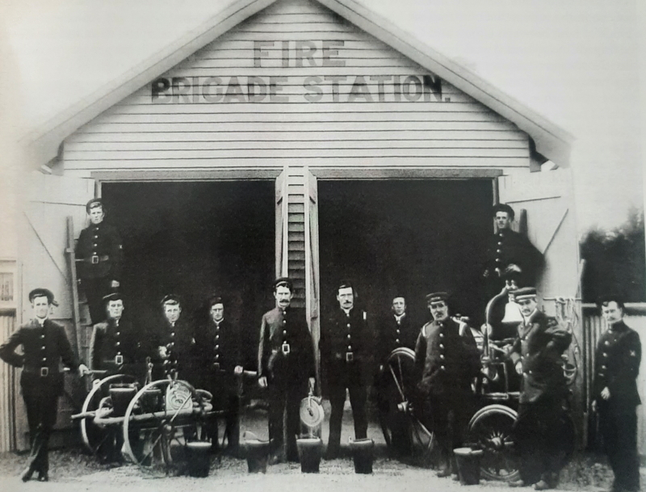
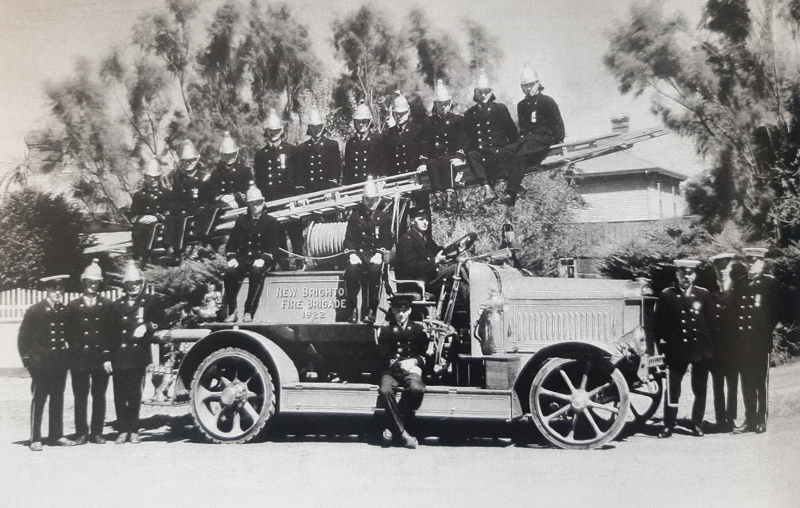
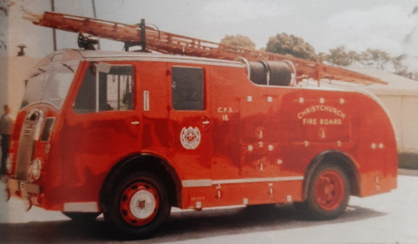
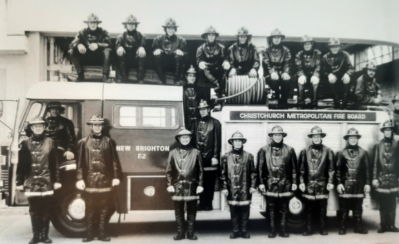
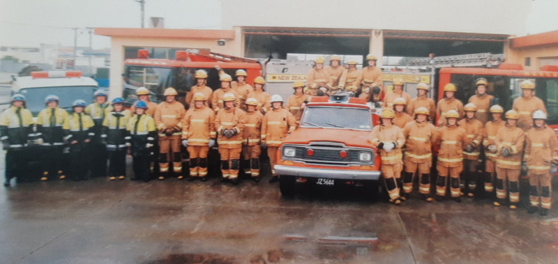
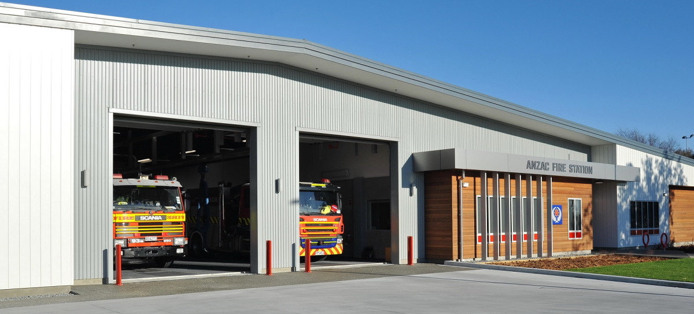

1908 - The Original Brigade
Photographed outside the Fire Station in Nelson Street, now Shaw Avenue.
Back Row: J.Hackshaw G.Walker Frot Row :T.Hobbs J.Mason W.Jones W.Heaton A.Gale W.Pearce C.McCrel W.Neate T.Falkinder V.Wyatt
1923 - The First Motorised Appliance
A 1922 Leyland
1958 - 50 Years Of Service

The brigade in 1958 - the 50th jubilee year.
1967 - The First Closed In Appliance
This 1954 Dennis F8 was the brigades first closed in appliance.
1974
The brigade in 1974, photographed with the first brand new appliance in 50 years. A Ford D600.
2008 - 100 Years Of Service
The brigade in 2008 - the 100th jubilee year.
2018 - Moved Station
On 14th June 2018 New Brighton moved across the river to the new Anzac Sation.